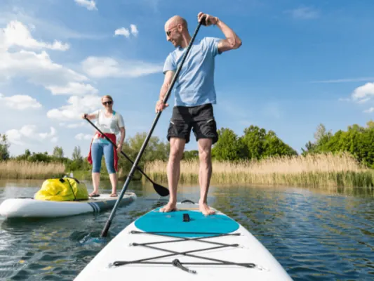
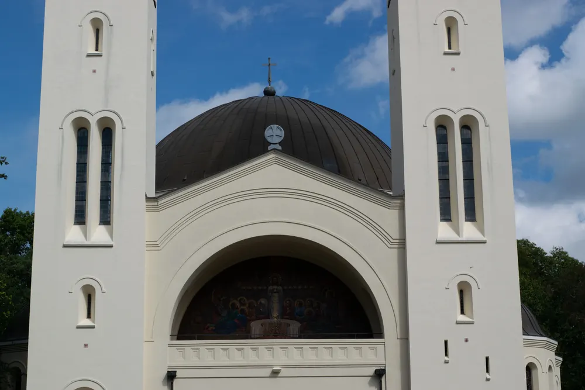
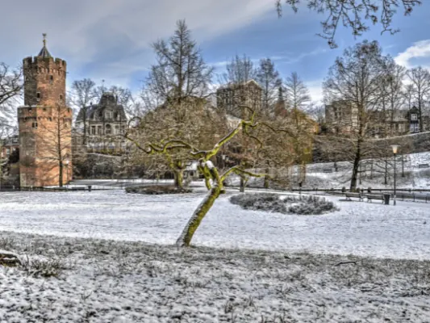

Gids
Natuur, parken en wandelen rond Nijmegen
Weinig steden hebben zoveel verschillende natuur binnen fietsafstand als Nijmegen. Aan de noordkant ligt de Ooijpolder met de Waal, de Bisonbaai en grazende runderen. Aan de oostkant en zuidkant klimt de stuwwal op tot bijna tachtig meter, met de Duivelsberg, de Mookerheide en de Sint-Jansberg. Daartussen liggen de bossen van Heumensoord en Heilig Landstichting, en in de stad zelf het Kronenburgerpark, het Goffertpark en het Valkhof.
In deze gids staan alle natuurgebieden en parken bij elkaar, met per gebied de routes, waar je parkeert en wat je er ziet.
Wandelen
Begin bij ons overzicht van wandelroutes: stadswandelingen, de Waalbrug en de Spiegelwaal, het Boswachterspad door de polder en de lange Walk of Wisdom rond de stad.

Wandelen in Nijmegen
Wandelen in Nijmegen: stadswandelingen, het rondje over de Waal naar Veur-Lent, Heumensoord, de Mookerheide, de Ooijpolder en de Walk of Wisdom. Met…
De andere rivier die door Nijmegen stroomt
Iedereen kent de Waal, maar er stroomt nog een rivier door Nijmegen. Ontdek welke, en waar je haar in de stad tegenkomt.

Over het water Nijmegen verkennen? Zo doe je dat!
Nijmegen vanaf het water ontdekken? Zo kun je de Waal op, met een sloep of bootje huren, voor een dagje uit met het gezin of een bedrijfsuitje.
Polder en rivier
Direct ten oosten van de stad ligt de Ooijpolder, een rivierlandschap met kolken, wilgen en vrij lopende runderen en paarden. In de zomer zwem je in de Bisonbaai.

Heuvels en bossen
De stuwwal uit de ijstijd geeft Nijmegen echte heuvels. De Duivelsberg bij Berg en Dal was tot 1949 Duits, de Mookerheide bloeit in augustus paars, en op de Sint-Jansberg borrelen bronnen uit de helling en liggen de resten van een Romeinse villa.
De Duivelsberg bij Berg en Dal
De Duivelsberg bij Berg en Dal: 75,9 meter hoog, bos met tamme kastanjes, pannenkoekenrestaurant op de top, wandelroutes, parkeren en waarom de heuvel…

Mookerheide bij Nijmegen
Wandelen op de Mookerheide bij Nijmegen: routes van 3 tot 17 km, Jachtslot de Mookerheide, de Sint-Jansberg, gratis parkeren, horeca en geschiedenis.
De Sint-Jansberg bij Plasmolen
De Sint-Jansberg bij Plasmolen en Milsbeek: 250 hectare bos van Natuurmonumenten met bronnen, de watermolen uit 1725, een Romeinse villa, parkeren aan…
Heumensoord
Wandelen in Heumensoord bij Nijmegen: de routes van 2, 5 en 6 km, parkeren aan de Beukenlaan, de heide met schapen, de beukenlanen en het militaire…

Heilig Landstichting
Heilig Landstichting, het dorp in het bos bij Nijmegen: hoe het rond 1913 ontstond als devotiepark, Museumpark Orientalis, de Cenakelkerk uit 1915 en…
Parken in de stad
Ook binnen de stad is het groen: het Kronenburgerpark met de middeleeuwse Kruittoren, het Goffertpark rond het stadion en het Valkhofpark hoog boven de Waal.

Kronenburgerpark Nijmegen
Alles over het Kronenburgerpark in Nijmegen: de Kruittoren en stadsmuur, de hertenkamp en speeltuin, het keukenmuseum, evenementen en hoe je er komt.
Goffertpark Nijmegen
Alles over het Goffertpark in Nijmegen: de kinderboerderij, het openluchttheater, het Goffertbad, concerten en festivals, eten en drinken en hoe je er…

Valkhof en Hunnerpark in Nijmegen
Alles over het Valkhof in Nijmegen: het vernieuwde Valkhof Museum (tijden en prijzen), het Valkhofpark met de Sint-Nicolaaskapel, het Hunnerpark en de…
Andere gidsen: zien en doen
Veelgestelde vragen
Waar kun je mooi wandelen bij Nijmegen?
In de Ooijpolder (Boswachterspad, 7,5 km), op de Mookerheide (3 tot 17 km), in Heumensoord (2, 5 en 6 km) en op de Duivelsberg en Sint-Jansberg, waar het Pieterpad overheen loopt. In de stad zijn er de Stadswandeling (5 km) en de Walk of the Town (7 km).
Wat is het hoogste punt bij Nijmegen?
De Sint-Jansberg bij Plasmolen haalt met de Kiekberg 77 meter; de Duivelsberg bij Berg en Dal is 75,9 meter.
Kun je zwemmen in de natuur bij Nijmegen?
Ja, in de Bisonbaai in de Ooijpolder en in de Spiegelwaal bij Lent. Kijk altijd naar de actuele waterkwaliteit op zwemwater.nl.
Welke parken heeft Nijmegen?
Het Kronenburgerpark bij het station, het Goffertpark in Nijmegen-Zuid en het Valkhofpark met het Hunnerpark boven de Waal.